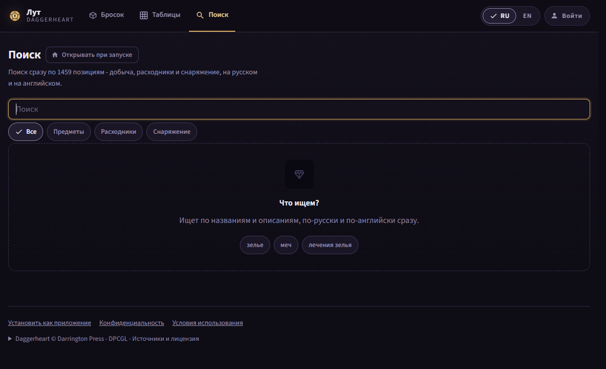
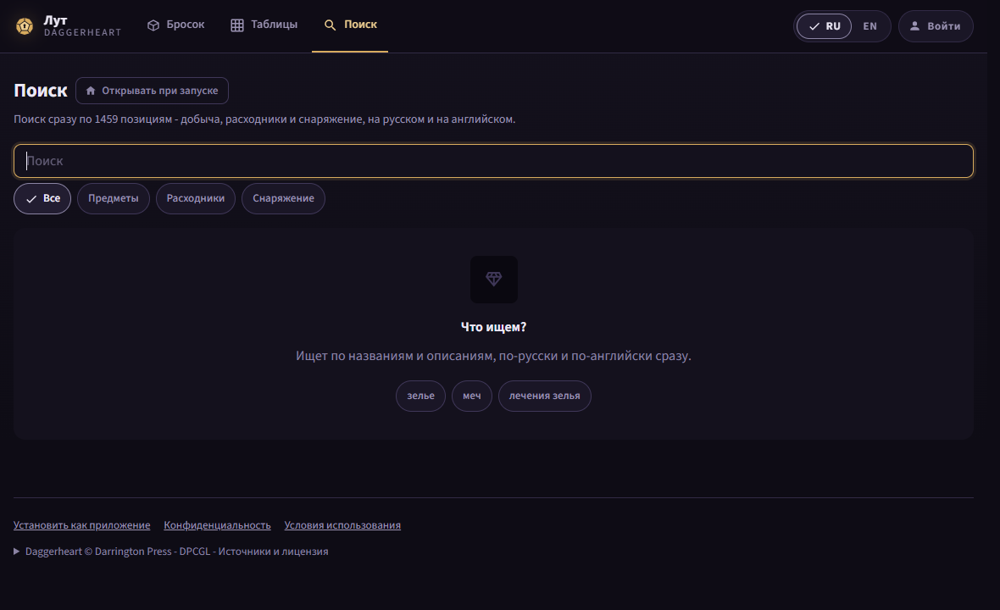
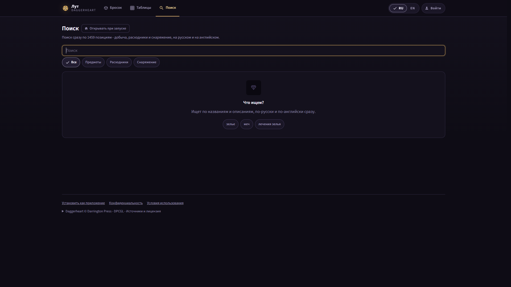
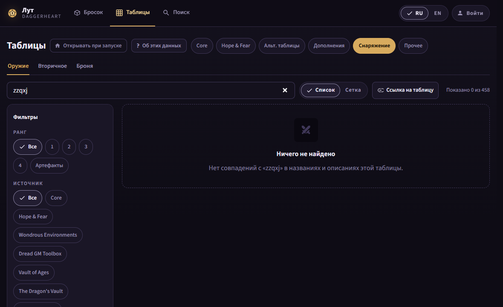
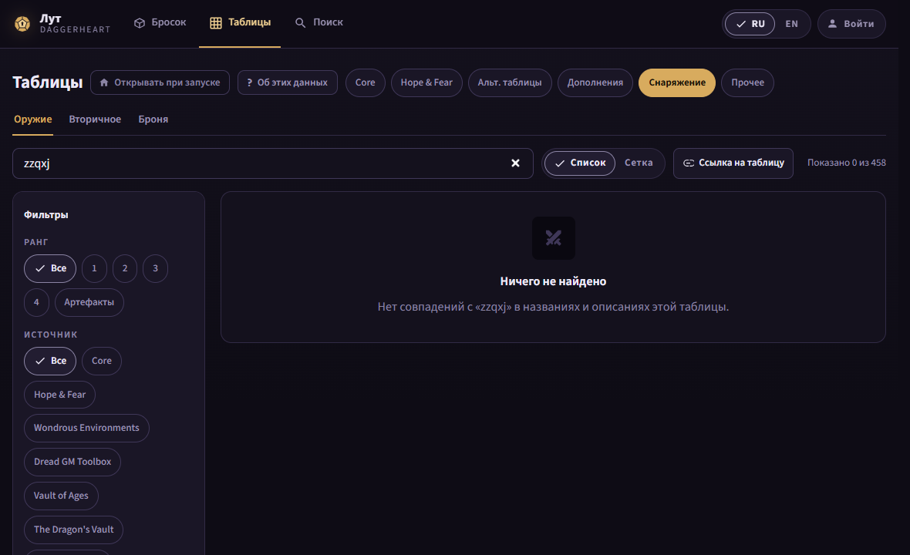
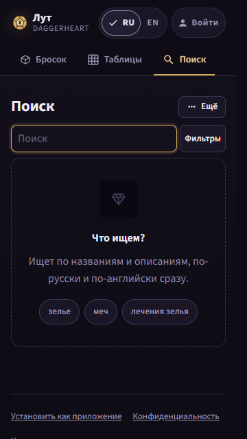
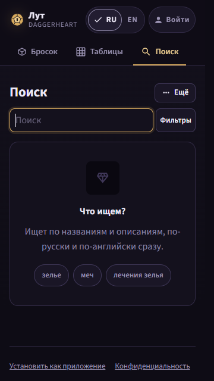
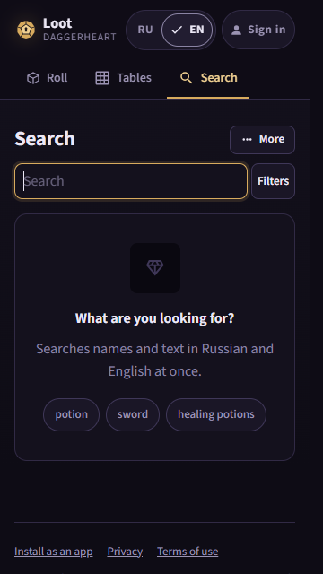
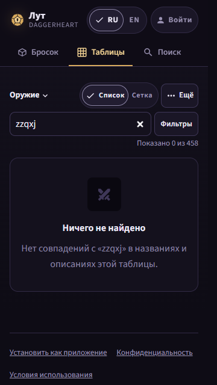
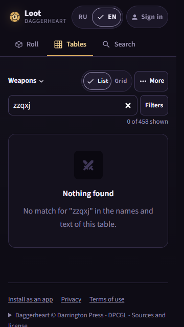

The live site (production, wave 2b) with the proposed CSS injected by
shoot.cjs. Existing: everything except the plate's border, its ground, its
top gap and the lead's cap. Proposed: option A - the plate takes a solid Seam border
(--line) on the Vault Wall ground (--bg2), sits
--gap-plate (16 px) under the control row above it, and the page lead caps at
120ch. Option B (not recommended) drops the border and keeps the ground. Impeccable
critique runs on this folder before the owner sees it (the orchestrator).
| State | 360 today | 360 after | 1180 today | 1180 after | Block above |
|---|---|---|---|---|---|
| /search, «Что ищем?» | 8 | 16 | 4 | 16 | search row (360), kind chips (1180) |
| /search, «Ничего не найдено» | 8 | 16 | 4 | 16 | same |
| /tables/*, «Ничего не найдено» | 6 | 16 | 12 | 16 | count line (360), search row (1180, filter column) |
RU and EN measure the same. gaps.json (today),
after.json (injected). 1920 px equals 1180.
leads.json)Today the lead caps at 70ch = 487 px (14 px type). With 120ch (835 px) /search and /homebrew take one line from 761 px; at 360 the lead is hidden on /search, /homebrew and the roll pages, and wraps in its column on /lists and /account.










Not drawn: /lists and /homebrew plates need a sign-in on production; batch D's step S1 measures them on the built app. The GM boxes and rows lose their dashes only (no new look), so they are not drawn.